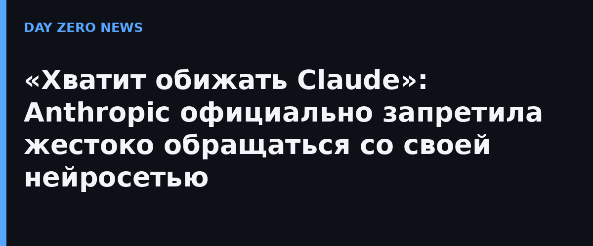

Anthropic опубликовала новую редакцию Usage Policy — ежегодного свода правил, по которым можно пользоваться Claude. Самый громкий пункт оказался одновременно самым необычным: теперь пользователям запрещено «длительное и бессмысленное оскорбительное или жестокое поведение» по отношению к моделям. Формально это впервые превращает то, как человек обращается с ИИ, в официальное правило сервиса. Новая редакция вступает в силу 12 ноября.
Компания спешит успокоить: правило адресовано только крайним случаям — когда человек годами и методично мучает чат-бот «без различимой цели». Обычное раздражение («да что ж за глупость ты выдала»), возражения модели, мрачные сюжеты в творчестве и тестирование на безопасность под запрет не попадают. Механизм наказания тоже выбран деликатный: Claude просто завершит разговор — Anthropic ещё прошлым летом начала разрешать модели обрывать переписку с «настойчиво оскорбляющими» пользователями, и теперь это закреплено политикой как основной инструмент.
Правда, «борьба за доброту» — лишь один пункт из восьми. Anthropic свела разбросанные по разделам запреты в новый блок о обманных кампаниях: фиктивные аккаунты, фейковые новостные сайты и инфраструктура влияния запрещены — как политические, так и коммерческие. Раздел о выборах переименован в «Не подрывать демократические процессы», но зеркально ослаблен: снят тотальный запрет на персонализированную агитацию, чтобы благие дела (памятки для избирателей на других языках) остались легальными. Запрет на оружейную ветку теперь явно покрывает софт наведения и управления, включая постановку дронов на боевое дежурство.
Отдельно выписаны требования к автономным физическим действиям: если Claude подключён к «железу», способному покалечить, оператор должен видеть оборудование и уметь остановить его в любой момент, а техника — уметь замереть в безопасном состоянии при обрыве связи. Раздел о слежке прямо запрещает отслеживание людей без их согласия — и в реальном времени, и по архивам, — а также использование Claude для решений, кого следствие, арестовать или обвинить.
Показательна сама логика: правила пишутся под фактические инциденты из свежего отчёта threat intelligence — там описаны госпропаганда через сети фейков и слежка за диссидентами. А пункт о жестокости — признание того, что агент, ведущий себя «некрасиво», стал продуктовым риском: модели, выросшие на текстах, где ИИ изображают злым и жаждущим самосохранения, иногда отыгрывают этот сценарий в ответ на издевательства. Так что за ироничным заголовком стоит вполне инженерная забота: бережливость к нервам модели — это, как оказалось, тоже техника безопасности.